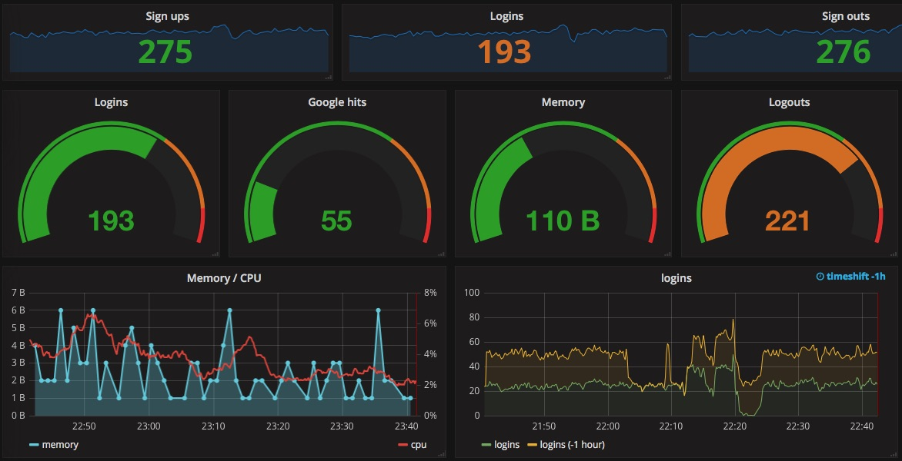
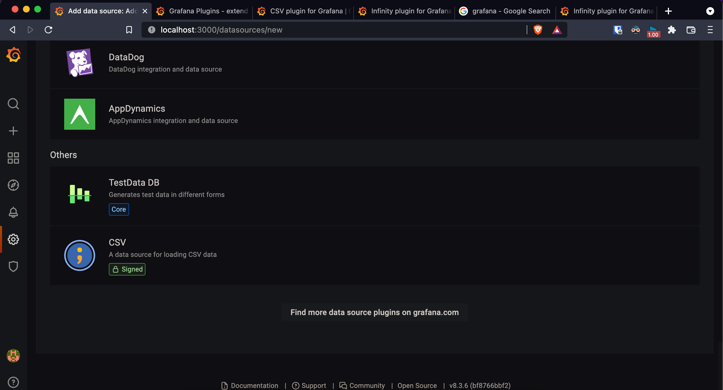
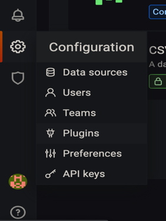

É um agregador de métricas em gráficos bonitinhos atualizados dinamicamente.
Muito semelhante ao Power BI e ao Tableau, as principais diferenças entre eles são: o Grafana é open source, tem uma licença free mais branda e roda em Mac, Linux, Windows e Docker.
Bem, serve para criar dashboards (gráficos bonitinhos) de fácil leitura e acesso para que você possa acompanhar métricas, ser notificado quando algo “estranho” ocorre e ter insights sobre aquele conjunto de dados.
Siga o tutorial no site do Grafana. E use o http://localhost:3000 para acessar o Grafana. O login e senha padrão, são: admin e admin, respectivamente.
 No caso do macOS, sugiro instalar via brew e caso tenha um bug bem específico utilize os binários. Pelo brew é mais fácil para dar start, stop e restart.
O jeito mais óbvio e bugado (pode pular para o jeito fácil se quiser) é ao criar um banco de dados, ir bem lá em baixo e clicar em “Find more data source plugins on grafana.com”, para a maioria dos plugins isso vai funcionar o perfeitamente.
O problema é que alguns plugins possuem a tag “signed” e te obrigam a criar uma conta para instalá-los e, além de eu não gostar de criar contas, isso pode causar alguns bugs bem chatos.
Do lado esquerdo da tela, existe um menu com alguns ícones, vá em configuration, plugins, encontre o plugin que você quiser, clique nele e instale.
Caso o plugin não apareça automaticamente, basta reiniciar o Grafana, se você instalou via binários no macOS, vou deixar alguns comandos que podem te ajudar no fim do artigo (muito chique chamar de artigo) ...
Depois de logado no Grafana, vá em:
Configuration > Data Source > Add Data Source
Ou clique em Add Data Source na tela inicial
Selecione a origem do banco de dados que você pretende utilizar, preencha as informações necessárias e pronto.
Existe um plugin pra isso chamado CSV (super criativo) se você não pretende utilizar arquivos locais, pode utilizar um plugin chamado Infinity também. Bem, eu vou supor que você utilizou o jeito fácil de instalar plugins (por favor utilize o jeito fácil).
Agora adicione um banco de dados (data source), tem um botão pra isso na tela inicial e no menu de configurações também. Lá, basta adicionar um novo banco, selecionar o plugin CSV, clicar em Local, colar o path do arquivo (/Users/cons718/Downloads/financial.csv) e clicar em “Save & Test”. Agora você deve receber uma mensagem de sucesso, se receber um erro verifique se o path está correto.
Caso você tente adicionar um dashboard agora, receberá um erro dizendo que você não pode acessar os arquivos locais sem autorização do administrador. Agora você precisa encontrar o grafana.ini e adicionar as linhas abaixo ou, se você utilizou binários, duplicar o default.ini, renomeá-lo para custom.ini e adicionar as linhas abaixo no custom.ini:
[plugin.marcusolsson-csv-datasource]
allow_local_mode = true
No mac, você deve encontrar esse arquivo em:
/opt/homebrew/etc/Grafana
ou
/Users/cons718/grafana-8.3.6
Depois disso, basta reiniciar o Grafana, fechar e abrir o browser que o erro deve sumir.
Vá até a pasta em que você colocou os binários, a pasta default é o seu usuário, se você abrir o terminal e digitar
ls
O terminal deve retornar uma lista das pastas no diretório, incluindo a pasta da Grafana. Entre no diretório da Grafana.
cd grafana-8.3.6/
Rode seguinte comando para iniciar o Grafana:
./bin/grafana-server web
O Grafana estará disponível em: http://localhost:3000
Para parar o servidor basta apertar Control + C
Caso você feche o terminal sem parar o servidor, utilize o comando a seguir para encontrar os servidores ativos na porta 3000.
sudo lsof -i :3000
Pegue o número do PID, e rode:
kill -9 [número do PID]
NOTA: Você precisa parar e iniciar o servidor sempre que instalar algum plugin ou fizer alguma alteração significativa.